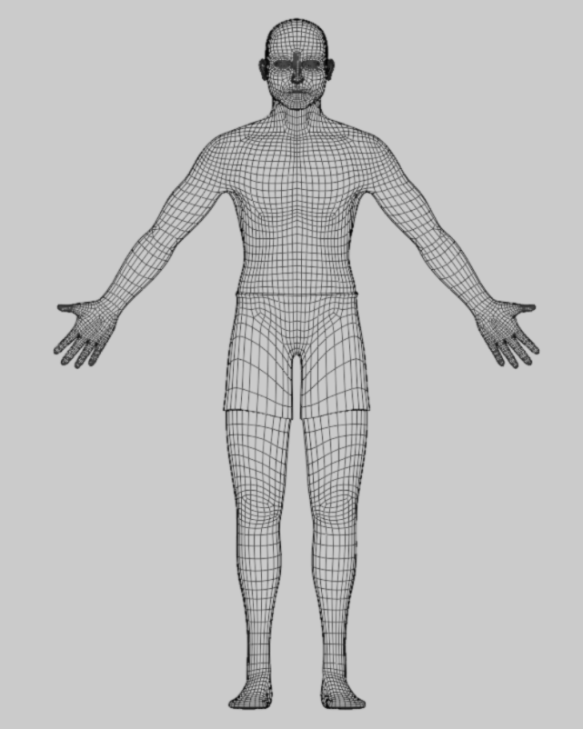
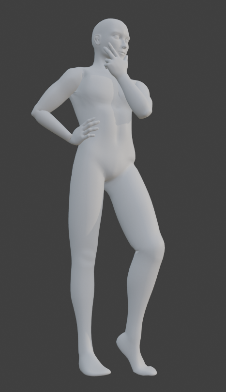
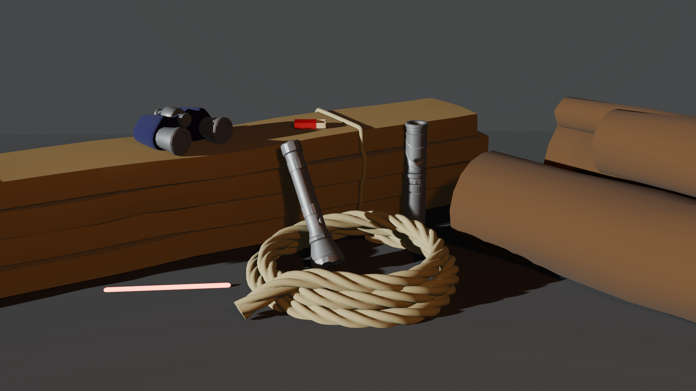
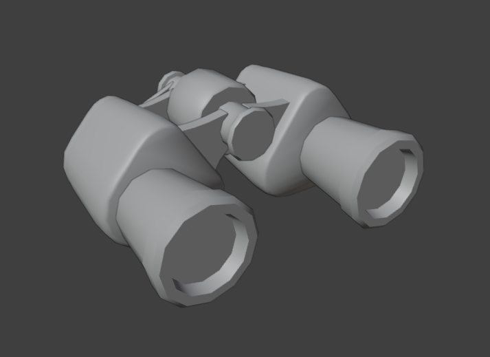
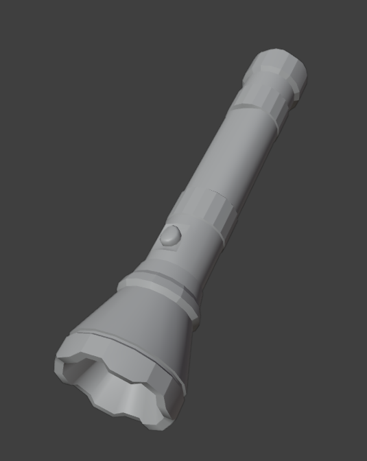
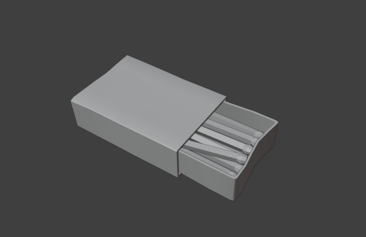
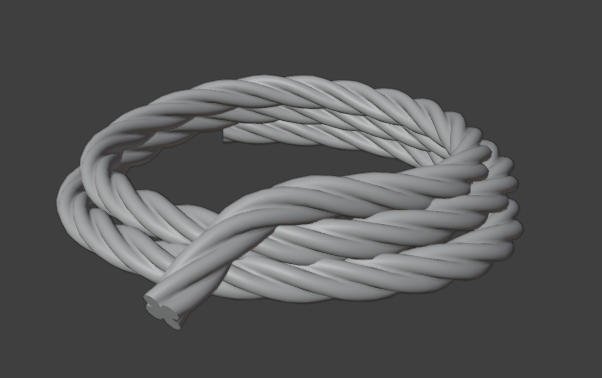

Autumn Ryan | 3D Art
Home ContactGame Work
Re:Silica
Alloy: Base Character
Alloy is the player character in Re:Silica. This model is the starting build, but its limbs can be swapped with parts from defeated enemies throughout the game. Made in Blender and textured in Substance Painter. Textures shown are for the gun only.


Flux
Flux, a cocky melee fighter who enjoys champion status in Re:Silica's only city, is the first boss developed for the game.


Scrap Remnant
The Scrap Remnant is the first enemy you encounter. Its primary job is constructing new Silicates in the Forge, but won't hesitate to band with its allies and attack Alloy in swarms.


Chaingun Enforcer
The Chaingun Enforcer is uniquely durable, and its quadruped legs allow it to have exceptional balance. Combined with its large gatling gun, this enemy is a force to be reckoned with.


Plasmadrift Sniper
The Plasmadrift Sniper is quick and smooth. Its hover legs allow it to avoid many obstacles, and its pinpoint-accurate laser rifle allows it to fight from a great distance.


Postmortem
Survivor
Base for Postmortem's main character. 23,602 tris, modeled in Blender.





Survival props
Set of basic survival props made for Postmortem. Modeled in Blender.



